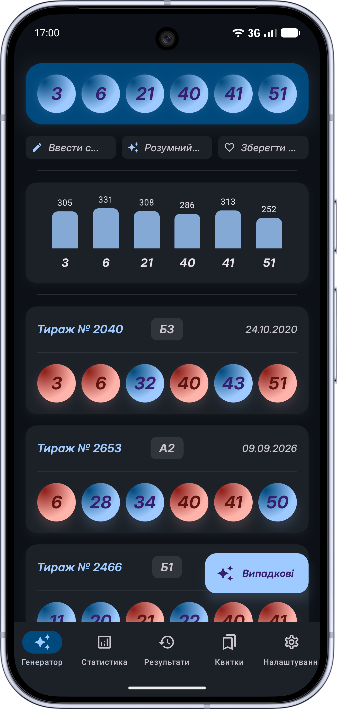
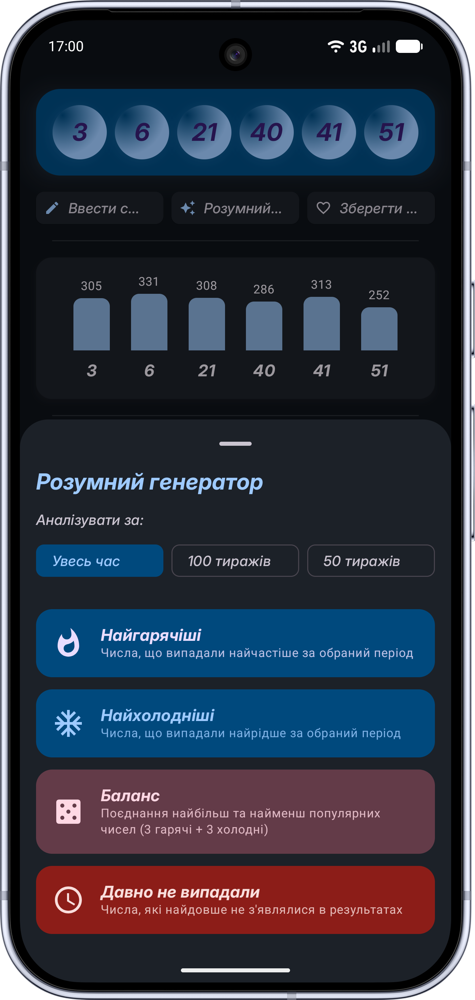
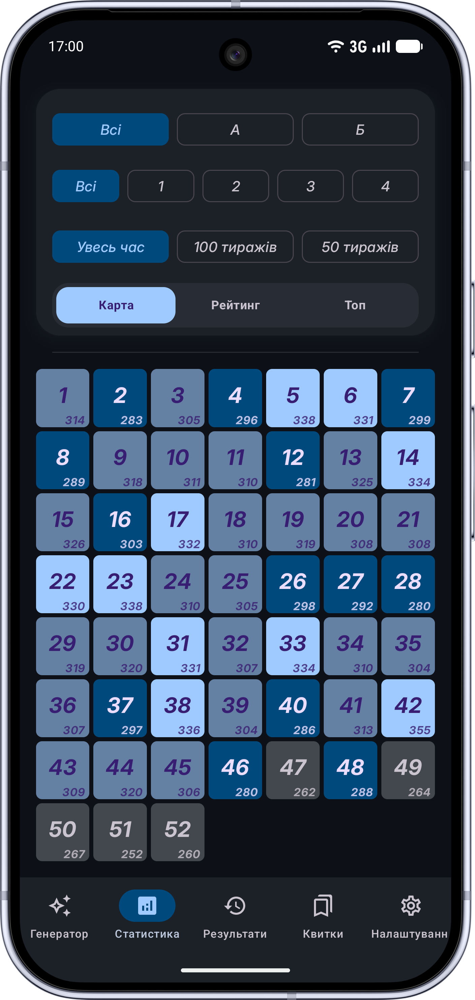
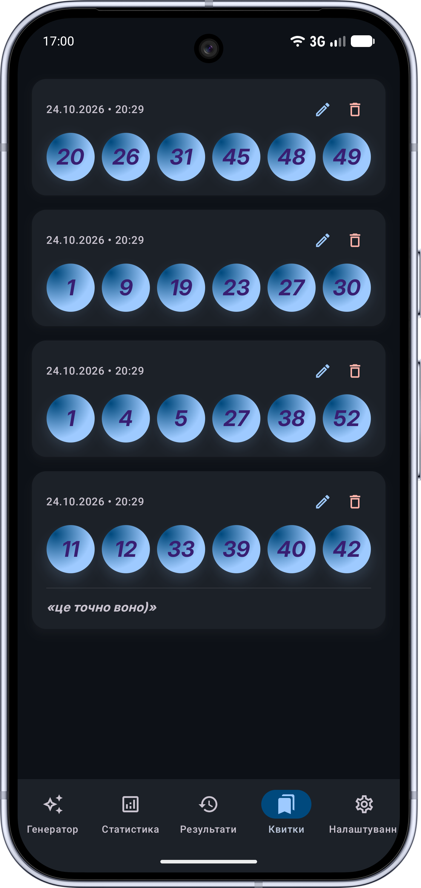

Аналіз історії тиражів замість сліпого вибору.
Розумні комбінації та статистика розіграшів.
Використовуйте повну базу з понад 2600 офіційних тиражів «Супер Лото»: генеруйте випадкові комбінації або підбирайте номери за 4 математичними стратегіями (найгарячіші, найхолодніші, баланс 3+3, давно не випадали), перевіряйте власні білети на збіги в минулих розіграшах і аналізуйте частоту кожної кульки.

Очікується скріншот:assets/super-loto/screen-main-uk.png
Додаток «Супер Лото Генератор» є незалежним інформаційно-статистичним інструментом і не є офіційним продуктом УНЛ («Супер Лото») та жодним чином не пов'язаний з організаторами лотереї. Статистика формується на основі відкритих даних (unl.ua) і надається «як є». Додаток не приймає ставки, не продає білети та не прогнозує виграшні номери — усі згенеровані комбінації є результатом випадковості або математичних моделей і не гарантують виграшу. Рішення про участь у лотереї приймається користувачем самостійно.
Чим «Розумний Генератор» відрізняється від сліпого автовибору
Звичайний автовибір у терміналі видає випадковий набір чисел без аналізу історії тиражів і без перевірки збігів у минулому.
- • Повна відсутність статистики: термінал видає числа наосліп, не показуючи, скільки разів кожна кулька випадала раніше.
- • Жодних стратегій відбору: неможливо обрати комбінацію з найчастіших, найрідкісніших або давно не випадаючих номерів за останні 50 чи 100 тиражів.
- • Немає перевірки історії: ви не бачите, у яких саме минулих тиражах ця комбінація вже збігалася на 2, 3, 4, 5 або 6 кульок.
- • База понад 2600 тиражів з автооновленням: повний архів розіграшів вбудовано в додаток, а нові тиражі автоматично підвантажуються при запуску.
- • Випадкова, ручна та розумна генерація: генеруйте випадкові числа, вводьте власні або обирайте одну з 4 стратегій на глибині 50, 100 тиражів чи за весь час.
- • Миттєва діаграма та пошук збігів: для кожної комбінації одразу будується графік частот і виводиться список усіх минулих тиражів із підсвічуванням вгаданих кульок.
П'ять розділів для аналізу, генерації та збереження комбінацій
Розумний вибір: 4 стратегії
Формуйте комбінації за весь час, останні 100 або 50 тиражів: «Найгарячіші» (найчастіші числа), «Найхолодніші» (найрідкісніші), «Баланс» (3 гарячі + 3 холодні) або «Давно не випадали».
Перевірка власного квитка
Натисніть «Ввести свої», оберіть 6 номерів із сітки 1–52 та миттєво перегляньте стовпчикову діаграму частоти кожної кульки і всі історичні тиражі, де збіглося від 2 до 6 номерів.
Статистика: Карта, Рейтинг і Топ
Три режими візуалізації: теплова «Карта» 52 кульок, «Рейтинг» усіх номерів із прогрес-барами та вкладка «Топ» (ТОП-10 гарячих і ТОП-10 холодних) із фільтрами за лототроном (А/Б), комплектом куль (1–4) та глибиною історії.
Збережені квитки з примітками
Зберігайте вдалі комбінації в один дотик, бачте точну дату й час створення, додавайте або редагуйте текстові примітки (наприклад, «На недільний тираж») та видаляйте неактуальні записи.
Архів результатів та офлайн-режим
Окрема вкладка «Результати» містить історію понад 2600 тиражів із датами, номерами лототронів та комплектів кульок. Уся база працює офлайн, а свіжі тиражі завантажуються автоматично при старті додатка.
Кастомізація, теми та Premium
Обирайте світлу, темну чи системну тему, 4 колірні палітри (Класика, Neon, Wealth, Joy), вмикайте сортування номерів за зростанням та за бажанням вимикайте рекламу назавжди разовою покупкою.
Продуманий інтерфейс Material Design 3
Плавна анімація випадання кульок із тактильним вібровідгуком, зручні фільтри та швидка навігація.

screen-generator-uk.pngГенератор комбінацій
Генератор, діаграма частот та збіги в історії

screen-stats-uk.pngСтатистика тиражів
Теплова карта, рейтинг та ТОП-10 кульок

screen-saved-uk.pngЗбережені квитки
Збережені комбінації з особистими примітками
Часті запитання
Чи гарантує додаток виграш у лотерею?
Ні. Додаток не прогнозує виграшні номери, адже кожен розіграш є випадковою подією. «Супер Лото Генератор» створений як аналітичний довідник, який наочно показує історію випадання кульок за понад 2600 тиражів і допомагає підбирати комбінації за статистичними критеріями.
Чи можна купити лотерейний білет прямо в додатку?
Ні. Додаток є виключно інформаційним інструментом, не проводить азартних ігор і не продає білети. Ви можете згенерувати, перевірити та зберегти комбінацію в пам'ять смартфона, щоб мати її під рукою.
Чи потрібен інтернет для роботи генератора та статистики?
Ні. База з понад 2600 тиражів уже вбудована в додаток, тому генератор, ручна перевірка квитків, теплова карта, рейтинг та історія результатів працюють повністю офлайн. Інтернет використовується лише для автоматичної підгрузки нових тиражів під час запуску та перевірки статусу покупки Premium у Google Play.
Спробуйте аналітичний підхід до вибору чисел
Завантажуйте «Супер Лото Генератор» безкоштовно з Google Play та перевірте історію своїх комбінацій просто зараз.